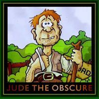
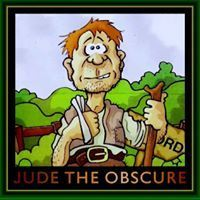

Testimonials
If you've seen me perform and want to write a testimonial, I'd love to hear from you!
"Paavan was very helpful beforehand, advising me on what style of magic would be best suited for my event. And then most importantly, when he turned up he was very approachable and wowed the whole party. I would definitely recommend him."
Jack Adler, Worcester College Entz Rep
"When looking for magicians for our ball, I instantly thought of Paavan - I've seen him at numerous events and would class him as one of the best magicians in Oxford. He was easy to book, flexible and professional. On the night, the guests all loved him and are still trying to figure out how he does it! For anyone looking for a magician, I couldn't recommend Paavan more highly.
Louisa Manning, St Peter's College Ball
"Paavan definitely made a big difference to our event. It wouldn't have been the same without him!"
Liam Peck, Oxford Medical Students' Society Ball
"Simply. Mind. Blown. It was great to have Paavan perform at our event and amaze all our guests, I would definitely request his presence next time!"
Pauline Chatelan, Oxford RAG Events Officer
"Paavan makes me doubt my own disbelief in magic!"
Makena Lohr, Oxford Hub President
"Paavan is a charmer in two ways: he charms people with his craft of magic as well as with his charismatic nature. In craft and in person, he is magical.
Elspeth Reilly, American School of London
"The best magician in Oxford!"
Tutku Bektaş, Oxford Hub Vice-President


 
